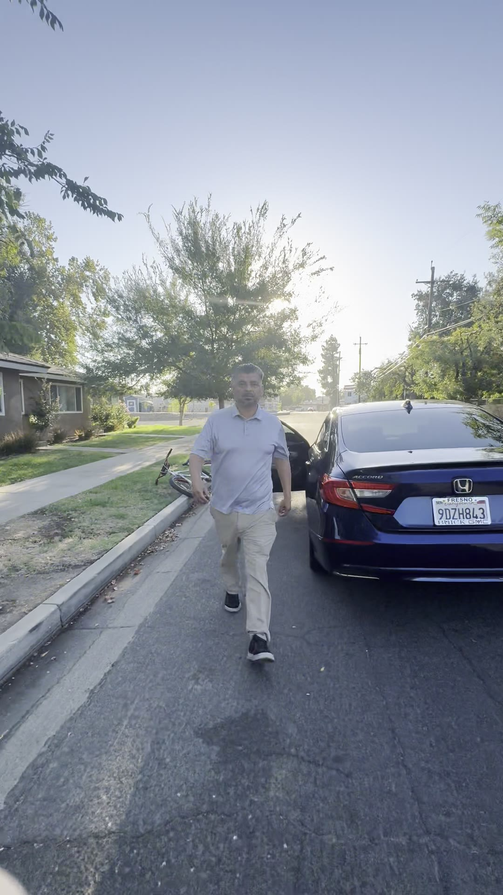

What happened
The driver was headed south on Echo Avenue and trying to turn left onto Thomas Avenue. A large black-and-white dog, German Shepherd or husky type, was in the way. That is the first object of his anger. The second is the stop sign.
Thomas and Yosemite is treated here as the most dangerous intersection in the Tower District. The neighborhood has already paid for that kind of driving. There has been a fatality at this intersection. A neighbor down the street had his back broken by a driver running a signal at Van Ness and Belmont. Reckless speed through these stops is not an abstract civic talking point. It is how people get killed on residential pavement.
The driver ran the stop. The cyclist, both hands off the bars, used the ordinary two-arm signal for slow down. Not a taunt. Not a chase. A visible request that a car already ignoring a stop sign not add a body to the record.
When the driver saw the signal, he sped up. That is the tell. A person who merely missed a sign tap the brake. A person who is performing anger at a dog, a cyclist, and the idea of being observed, puts his foot down.
The cyclist then recorded, and yelled the only sentence the moment required.
"I said slow down."
He felt compelled to yell because he was in the roadway on a bicycle and the car was still moving with that same anger. After the pass, the driver stopped, got out, walked toward the camera, and tried to flip the file. The problem, he said, was not the stop sign. The problem was that someone was bothering him.
The plate
The photograph is published without blur. The plate is a fact of a public incident on a public street. It is not a request that anyone hunt the driver. It is the identifier that makes the record checkable.


The recording
The source clip is already published as a YouTube Short. Play it here. The transcript below is the conversation as spoken, including the moment the driver reaches for a molestation story.
youtube.com/shorts/Py6vlL1kUvM. Description on the upload: the driver honked at a dog, then jammed the gas while a cyclist signaled slow down.


The conversation, in order
Cyclist is the recorder. Driver is the man who got out of the Accord. The later lines in which the driver films and addresses "you guys" are spoken toward his own phone while still in the car.
California Penal Code 415 is disturbing the peace. The cyclist applied it to the driver getting out and trying to start a fight. The driver answered by inventing a molestation story. That inversion is the tell that matters.
The false narrative is the point
Watch the sequence, not the volume. He runs a stop. He is told to slow down. He names the observer as the problem. He tells the cyclist to shut the fuck up and mind his own business. The cyclist names the escalation as PC 415 and says the driver is trying to start a fight. When that does not land, the driver reaches for the nuclear word in American street speech: molest. Then he records his own warning to the neighborhood. The guy on the bike is "following people." Watch out.
That is not a traffic dispute that got loud. That is a person who enjoys harm constructing a file that will travel farther than the stop sign he ignored. The sadism is in the inversion. The original act is reckless driving at an intersection that has already killed. The substitute act is branding the witness as a sex predator.
This is not rare in 93728. People who treat the criminal code as optional often treat the accuser's reputation as the cheapest weapon available. If you expect them to follow the law, they will answer with a story about you. In Spanish street slang the word they reach for is chomo. Child molester. The accusation does not need evidence. It needs an audience and a motive to make the original complaint too expensive to repeat.
The same pattern showed up after publication of Confluence in the Tower. The author of that piece was banned for the fifth time. Predators do not have to disprove a traffic record or a street condition. They can call you a sex predator and wait for institutions to flinch.
What the 1992 FBI document actually said
In January 1992, Supervisory Special Agent Kenneth V. Lanning of the FBI Behavioral Science Unit published Investigator's Guide to Allegations of "Ritual" Child Abuse through the National Center for the Analysis of Violent Crime at Quantico. In December 1992 he issued the third edition of Child Molesters: A Behavioral Analysis with the National Center for Missing and Exploited Children. These are the law-enforcement documents people mean when they say "the 1992 FBI bulletin" on this subject.
Lanning spent his career making child sexual victimization visible to police. He did not write to protect molesters. He wrote because false and theatrical accusations destroy the credibility of real cases. That is the part the street weaponizes in reverse. The people who need the word "molester" as a club are counting on everyone else to treat the word as radioactive and walk away from the original facts.
Lanning, 1992
"In response to accusations by a few that I am a 'satanist' who has infiltrated the FBI to facilitate a cover-up, how does anyone (or should anyone have to) disprove such allegations? Although reluctant to dignify such absurd accusations with a reply, all I can say to those who have made such allegations is that they are wrong and to those who heard such allegations is to carefully consider the source."
"I have spoken out and published on this issue because I am concerned about the credibility of the child sexual abuse issue and outraged that, in some cases, individuals are getting away with molesting children because we can't prove they are satanic devil worshippers."
Two rules fall out of that text and apply on Echo Avenue as cleanly as they applied at Quantico.
- Consider the source. The man introducing a molestation story is the man who just ran the stop and then named the witness as the problem.
- Protect the real crime. Child sexual abuse is real, frequent, and under-reported. Using that crime as a smear against a cyclist who said "slow down" is not child protection. It is vandalism of the only language that still makes institutions move.
Lanning also wrote that acquaintance molesters are "one of us," and that the dirty-old-man-behind-a-tree poster was a myth that made actual offenders harder to see. That cut goes both ways. Real predators hide in ordinary roles. False accusers hide inside the same vocabulary. The work is to keep the words attached to evidence.
The Planning Commission record
The same week, the same voice is on the official City of Fresno feed. Fresno Planning Commission, August 19, 2026. The clip below is set to start at 1:49:11, when that comment begins. Press play. It should open on the remark, not the roll call.
Official upload: City of Fresno Council, Boards, and Commissions. Direct link with start time: youtube.com/watch?v=MCOhw7L1KnI&t=6551s.
What is, and is not, in this file
This page records a public incident. It names a plate because the plate was displayed on a public street and spoken onto a public recording. It does not publish a home address. It does not ask anyone to confront the driver. If a peace officer wants the file, the file is here.
PC 415 covers fights, unreasonable noise, and offensive words in a public place that are likely to provoke an immediate violent reaction. The cyclist applied it to the man who left the car, walked toward the camera, told him to shut the fuck up, and offered a fight. That reading fits the statute better than treating a two-hand slow-down signal as the crime.
The driver's claim that the cyclist is "following people" and wants to "molest them" is offered with no facts except the cyclist's presence on a bicycle after a stop-sign run. That is the false narrative. It is documented here so it cannot be the only copy in circulation.
Sources
- Phone video IMG_3020.MOV, iPhone 16, August 26, 2026, 7:39:17 a.m. PDT. Embedded GPS +36.7522, -119.8018. Duration 57.55 seconds.
- Still photograph IMG_3022.jpg, same incident, rear plate 9DZH843.
- YouTube Short, channel AARON: I'm talkin to YOU and I said...
- City of Fresno Planning Commission, August 19, 2026, official stream, comment beginning 1:49:11: MCOhw7L1KnI
- Prior story, Confluence in the Tower, August 2026.
- Kenneth V. Lanning, Investigator's Guide to Allegations of "Ritual" Child Abuse, FBI Behavioral Science Unit / NCAVC, January 1992. Public-domain U.S. government work. Wikisource and NCJRS 136592.
- Kenneth V. Lanning, Child Molesters: A Behavioral Analysis, 3rd ed., NCMEC / OJJDP, December 1992.
- California Penal Code section 415, disturbing the peace.
Close
A dog in the street does not justify a stop-sign run. A two-hand slow-down does not justify a fight. A bicycle does not justify a molestation story. The people who reach for that story on contact are telling you how they keep a neighborhood from enforcing its own pavement.
Lanning's 1992 instruction still works. Consider the source. Keep the word "molester" attached to evidence. Do not donate it to the first driver who got caught ignoring a stop.